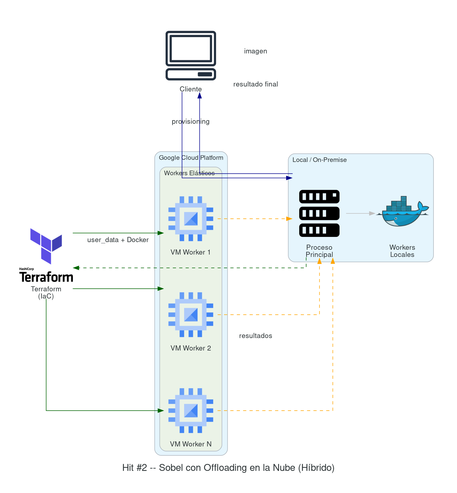
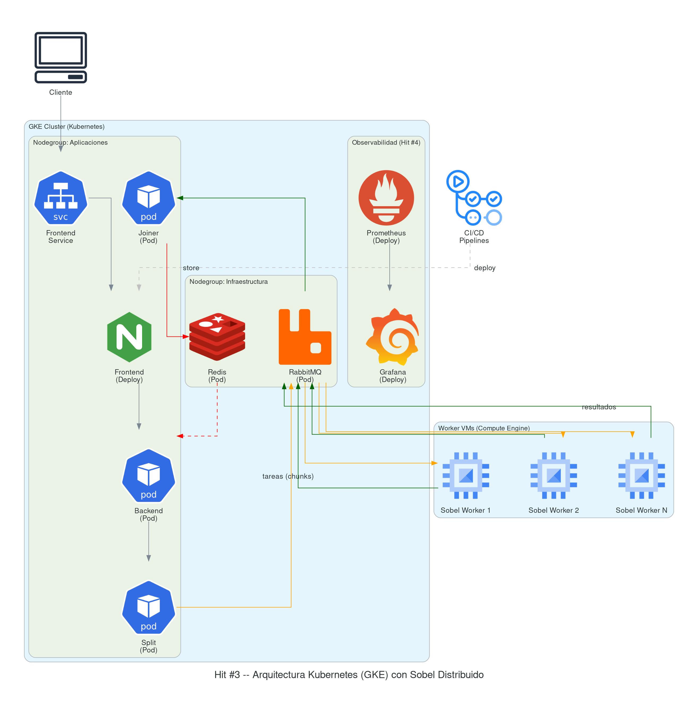

Trabajo Práctico Nº 3 — Parte 2
Computación en la Nube (Kubernetes / RabbitMQ)
Fecha de entrega: 20/05/2026 — todos los puntos.
Continuidad con la Parte 1. Esta entrega asume los ejercicios del Hit #0 (patrones de mensajería [RMQ]) y el Hit #1 (Sobel distribuido sobre Docker [SOB68]) ya resueltos. Los requisitos generales de entrega (informe, repositorio público, CI/CD, gitleaks, video, health-check) y la lista de Contenidos del programa relacionados son los mismos que los declarados en la Parte 1 — no se repiten acá.
Práctica
En la nube tenemos dos patrones de trabajo:
- Cloud Native: la aplicación corre 100% en la nube.
- Híbrido (On-premise + Cloud): parte de la aplicación corre en equipos locales y otra parte en la nube.
Pensemos la nube como una extensión de la capacidad de cómputo de los equipos locales. Aplicando este enfoque podemos implementar el patrón de Cloud-Bursting [CBURST]: cuando la demanda local satura la capacidad propia, “se desborda” hacia la nube.
En esta segunda parte vamos a hacer que todo lo que en la Parte 1 se corrió “distribuido” (pero centralizado en la propia computadora) escale realmente.
¿Qué queremos lograr?
- Si nos quedamos solo en local, agregar más nodos de trabajo requiere tiempo (compra, ambientación, espacio físico e instalación de paquetes) y genera un costo fijo mínimo, además del variable por intensidad de uso.
- Hacer offloading a la nube [KUM10] es la alternativa elástica: los recursos se aprovisionan y se destruyen on-demand, y se paga solo por el tiempo de uso. En este apartado vamos a trabajar sobre este enfoque.
Hit #2 — Sobel con offloading en la nube
El objetivo del Hit #2 es construir una base elástica: el mismo cómputo del operador de Sobel del Hit #1, pero usando Terraform [TF] para crear nodos de trabajo bajo demanda y eliminarlos al terminar la tarea. Para cada worker, el ciclo es:
- Provisioning: crear la VM en el cloud provider.
- Bootstrap: instalar las herramientas necesarias
mediante
user_data(Java, Docker, tooling). - Deploy: copiar el ejecutable (
.jar,.py, etc.) o descargar la imagen Docker desde un registry público. - Join: poner a correr la aplicación e integrarla al cluster de trabajo.
- Teardown: una vez completada la tarea, destruir la VM.
Requisitos de Infraestructura como Código (IaC)
- Remote state obligatorio: configurar un backend
remoto para el estado de Terraform (GCS bucket + lock, o S3 + DynamoDB
lock). No se acepta estado local
(
terraform.tfstateen el repo). - Estructura de archivos mínima: organizar el código
Terraform en archivos separados:
provider.tf(configuración del provider y backend),variables.tf(declaración de variables),main.tf(recursos principales) youtputs.tf(valores de salida). No colocar todo en un único archivo. - Terraform plan en CI/CD: el pipeline debe ejecutar
terraform planen cada Pull Request yterraform applysolo al mergear a la rama principal.
El objetivo es construir una arquitectura híbrida escalable (tipo 1, inicial). Presenten el diagrama de arquitectura y justifiquen, para cada servicio, dónde lo despliegan (local vs nube) y por qué.

Hit #3 — Sobel contenerizado, asincrónico y escalable (base del TP Integrador)
A diferencia del esquema híbrido del Hit #2, ahora la idea es construir una infraestructura 100% en la nube pero con un enfoque diferente: orquestada con Kubernetes [K8S].
1. Desplegar con Terraform un cluster de Kubernetes (GKE)
Este cluster va a manejar todos los recursos del sistema: tanto los servicios de infraestructura (RabbitMQ, Redis) como los componentes de aplicación (frontend, backend, split, joiner). La configuración mínima exigida es:
- Nodegroup de infraestructura: aloja los servicios base (RabbitMQ, Redis, observabilidad).
- Nodegroup de aplicaciones: aloja los componentes del sistema (frontend, backend, split, joiner).
- Pool de workers fuera del cluster: máquinas
virtuales gestionadas con Terraform aparte (no son nodos de Kubernetes),
encargadas de las tareas de cómputo intensivo. Mantenerlas fuera del
cluster permite escalarlas de manera independiente y aprovechar tipos de
instancia distintos sin cambiar el
nodepoolde GKE.
Requisitos de mensajería (aplicando los patrones del Hit #0)
- Dead Letter Queue: configurar una DLX en las colas de procesamiento Sobel. Si un worker falla al procesar un fragmento de imagen (crash, timeout, out of memory), el mensaje debe ir a la DLQ en lugar de perderse. Implementar un servicio que monitoree la DLQ y re-asigne los fragmentos fallidos a otros workers.
- Retry con exponential backoff: cuando un worker no puede contactar a RabbitMQ o Redis (por ejemplo, durante un despliegue o reinicio), debe reintentar la conexión con backoff exponencial (1s, 2s, 4s, 8s, máximo 30s). No implementar retry infinito sin backoff: genera tormentas de reconexión que empeoran el problema.
- Pub/Sub para notificación de resultados: cuando un
worker completa un fragmento, publicar el resultado en un
exchange
fanoutpara que tanto el servicio joiner como el dashboard de monitoreo reciban la notificación.

2. Construir los pipelines de despliegue
- Pipeline 1 — Infraestructura: construye el cluster
de Kubernetes con Terraform.
- Pipeline 1.1 — Despliega los servicios base (RabbitMQ, Redis y otros).
- Pipeline 1.2 … 1.N — Despliega cada aplicación (frontend, backend, split, joiner).
- Pipeline 2 — Workers dinámicos: despliega y destruye las máquinas virtuales que actúan como workers. Objetivo deseable: que el dimensionamiento sea dinámico según la cola pendiente.
Hit #3 (cont.) — Análisis de desempeño bajo carga
Para evaluar el desempeño de la plataforma vamos a medir los tiempos de respuesta en diferentes escenarios, modificando tres variables:
- V1 — Tamaño de los datos: 1 KB, 10 KB, 100 KB, 1 MB, 10 MB, 100 MB.
- V2 — Concurrencia: distintos niveles de peticiones concurrentes.
- V3 — Cantidad de workers: se ajusta el número de procesos o threads disponibles para manejar las peticiones.
Nota sobre quotas: las cuentas gratuitas de los cloud providers tienen límites de VMs por región/zona. Si necesitan escalar a más nodos para los experimentos, distribúyanlos entre varias regiones para no chocar contra el cupo.
El objetivo es entender cómo la plataforma responde al modificar estas variables, identificar la capacidad real de escalabilidad y los posibles cuellos de botella. Los resultados se presentan en una tabla con el tiempo de respuesta para cada combinación de variables, dando una visión clara de la evolución del desempeño bajo distintas condiciones.
Herramienta de load testing: usar una herramienta de benchmarking como Locust [LOCUST] o k6 [K6]. Permiten definir escenarios reproducibles y generar reportes comparables. Documenten la configuración del test (cantidad de virtual users, ramp-up, duración) y presenten los resultados con métricas estándar: latencia p50/p95/p99, throughput (req/s) y tasa de errores.
Hit #4 — Observabilidad (Prometheus + Grafana)
Desplieguen Prometheus [PROM] y Grafana [GRAF] en el cluster de Kubernetes para monitorear la plataforma:
- Instalación: instalar Prometheus y Grafana en el
nodegroup de infraestructura. Pueden usar el Helm chart oficial
prometheus-community/kube-prometheus-stack. - Instrumentación: instrumentar los servicios (backend, workers, split, joiner) para que exporten métricas custom: tareas procesadas, tareas en cola, tiempo de procesamiento por tarea y errores.
- Dashboard: crear un dashboard en Grafana que
muestre como mínimo:
- Uso de CPU y memoria por pod/nodo.
- Mensajes procesados en RabbitMQ (publicados vs consumidos vs en cola).
- Latencia de procesamiento de tareas (p50, p95, p99).
- Tasa de errores.
- Alertas: configurar al menos una alerta básica (por ejemplo: cola de RabbitMQ supera un umbral, o un worker no responde en X segundos).
Referencias y Bibliografía
- [BUR18] Burns, B. (2018). Designing Distributed Systems: Patterns and Paradigms for Scalable, Reliable Services. O’Reilly Media.
- [CBURST] Cloud-bursting — Atlassian. atlassian.com/…/cloud-bursting
- [GRAF] Grafana Documentation. grafana.com/docs/grafana
- [K6] k6 — Load testing for engineering teams. k6.io
- [K8S] Kubernetes Documentation. kubernetes.io/docs
- [KUM10] Kumar, K. & Lu, Y. (2010). “Cloud Computing for Mobile Users: Can Offloading Computation Save Energy?”. Purdue University. PDF
- [LOCUST] Locust — Open source load testing tool. locust.io
- [PROM] Prometheus — Monitoring system & time series database. prometheus.io/docs
- [RMQ] RabbitMQ Documentation — Tutorials y patrones de mensajería. rabbitmq.com/tutorials
- [SOB68] Sobel, I. & Feldman, G. (1968). “A 3x3 Isotropic Gradient Operator for Image Processing”. Stanford AI Project.
- [TF] Terraform by HashiCorp — Documentation. developer.hashicorp.com/terraform/docs